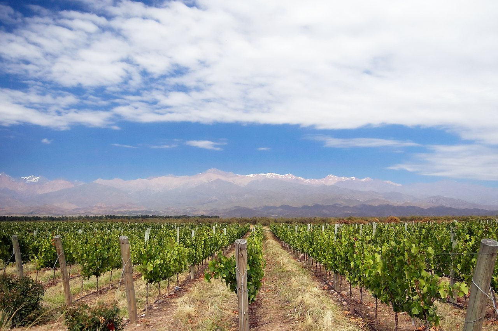

Astra Partners
Inversión y desarrollo de empresas
Invertimos capital propio junto a co-inversores en empresas argentinas, con una visión de largo plazo. Participamos activamente en la gestión para fortalecer la operación, desarrollar los equipos e impulsar el crecimiento.
Enfoque de inversión
Buscamos empresas con un negocio probado y oportunidades concretas de crecimiento y mejora de su gestión.

Evaluamos la capacidad de generar caja, la posición competitiva, las necesidades de capital y el equipo que llevará adelante el plan.
Definimos cada inversión a partir de los objetivos acordados con los accionistas y de las oportunidades de desarrollo.
Cómo trabajamos
Participamos activamente en la dirección y el desarrollo de las empresas, junto a sus accionistas y equipos.
Acordamos una estrategia y acompañamos su ejecución, fortaleciendo la gestión y la organización.
Co-inversores
Trabajamos con co-inversores con quienes compartimos objetivos y una visión de largo plazo.
Fundador
Es inversor, con experiencia internacional en inversiones y finanzas corporativas y un MBA de London Business School. Actualmente lidera Astra Partners desde Argentina.